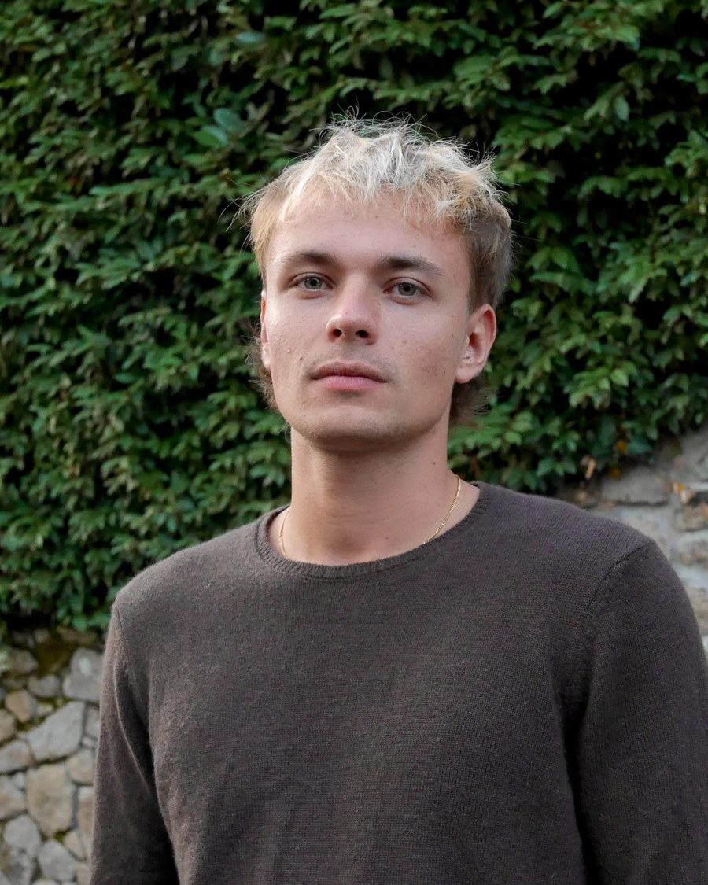

Machine learning & applied mathematics
Benjamin Séguin
M.Sc. in Applied Maths and Computer Science (IASD) · Université PSL — Paris, France
About me
I recently completed an M.Sc. in Applied Maths and Computer Science (IASD) at Université PSL. My research internship, in the MILES team at LAMSADE with Clément W. Royer, was on nonconvex optimization for data science: I proposed a new first-order optimisation method that provably escapes saddle points, proved its complexity guarantees, and validated it numerically. Alongside it I explored inverse imaging problems and their connection to optimal transport and geometry.
Before that, I completed an M.Sc. in Financial Engineering at HEC Montréal, then worked for 9 months as a research assistant with David Ardia. I also spent 8 months as a quantitative researcher/developer at La Caisse, building machine learning pipelines for LLM-based sentiment extraction.
I am currently looking for a CIFRE PhD or a research-oriented role in industry.
Looking for
- CIFRE PhD
- Research engineer
- Machine learning engineer
- Junior research scientist
- Quantitative researcher
Open to positions in France and abroad.
Selected work
Recent publications
-
2026
Nonlinear Conjugate Gradient with Perturbed Heavy-Ball Saddle Escape: Complexity and Local Convergence
Master's thesis manuscript
A first-order method that pairs a safeguarded nonlinear conjugate gradient descent phase with a perturbed heavy-ball escape phase, reaching an approximate second-order stationary point with high probability using gradient evaluations only.
-
2025
-
2025